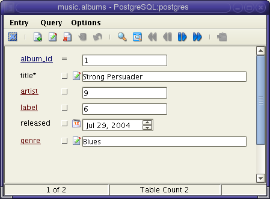
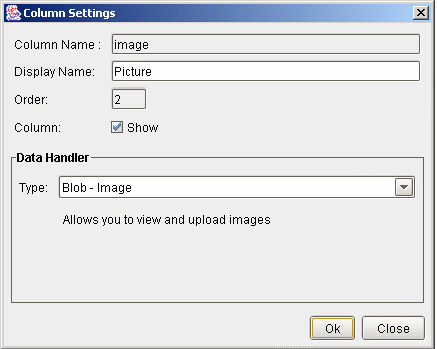

Data Browser
The Data Browser is a powerful feature of Abeille. Table data can be displayed on a row by row basis. You can also customize how each column is displayed in the view.

| Clears all columns in the view. | |
| Adds the current row to the table. | |
| Modifies the data in the table according to the selected contraints | |
| Deletes the data in the table according to the selected constraints | |
| Commits any previous updates, inserts, or deletes. If you database does not support transactions, this command has no effect. | |
| Rolls back any previous updates, inserts or deletes. This operation has no effect if your database does not support transactions. | |
| Queries the table using the selected constraints. | |
| Displays the result set in a grid view. | |
| Moves to the first row in the result set. | |
| Moves to the previous row in the result set. | |
| Moves to the next row in the result set. | |
| Moves to the last row in the result set. | |
| Pastes the columns to the associated columns of the linked table (either foreign key or user defined link). This button is only enabled if the form was launched from a linked table. |
Constraints
You can select a constraint for each column by clicking the constraint button to the right of the column label. The constraint applies when you peform an update, delete, or query.
To update or delete data in a
table you must first constrain a column. This sets the WHERE
clause in the UPDATE or DELETE statement. The Data Browser does
not currently support updateable result sets. So, you must set
the constraint to specify which rows are to be updated or
deleted.
The Data Browser supports commit
and rollback operations only if Auto
Commit is set to OFF. You can change this parameter in the
Options dialog on the main toolbar.
Tables that have links from either
foreign keys or user defined links can be launched from the form of the
related table. Linked columns are displayed in red. When you click on
the column name, the form for the related table is launched. You can
create custom links in the Model View.
Configuration
Each column can be configured to display the following types.
| Default | Most of the time the default data type that is returned by the JDBC driver is sufficient. Abeille will automatically determine the type and display the data accordingly. However, Abeille cannot automatically determine the contents of some data. For example, with blob types there is no way to determine if the data is an image, text, of something else. Abeille allows you to manually specify the type for these situations. |
| Blob Image | Displays the data as an image. The data type must be a blob and contain a valid image type (gif, jpg, png) |
| Blob Text | Displays the data as text in a multiline editor. The data type must be a blob. |
| Blob Java Object | Converts the blob data to a Java object and displays the member variables of the object. The data must be a serialized object. Furthermore, any classes required by the object must be included in the classpath of Abeille. |
| Integer | Displays the data as an integer. |
| Multiline Editor | With this setting Abeille handles data as a VARCHAR type. Additionally the data is displayed in a text field with multiple lines. |
| Numeric | Displays the data as a numeric type. |
| Varchar | Displays the data as a text type. |
